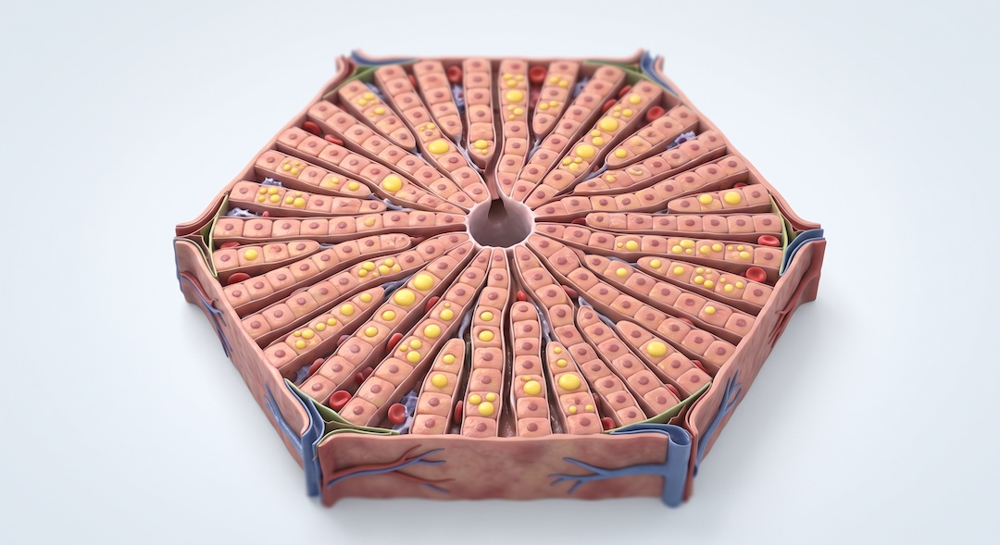
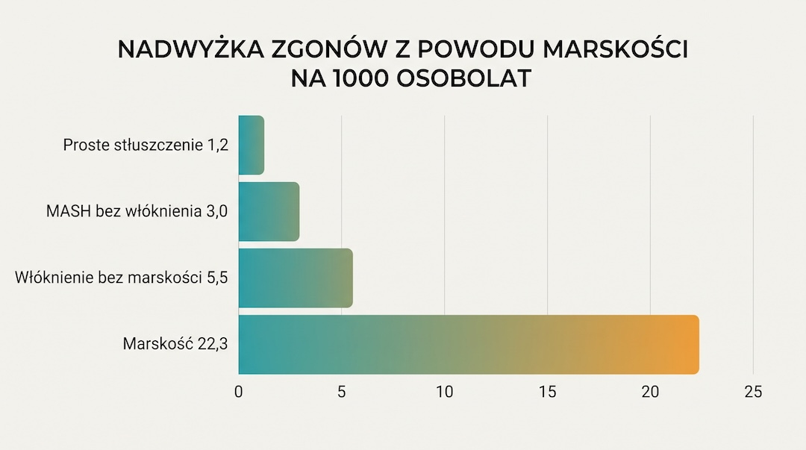
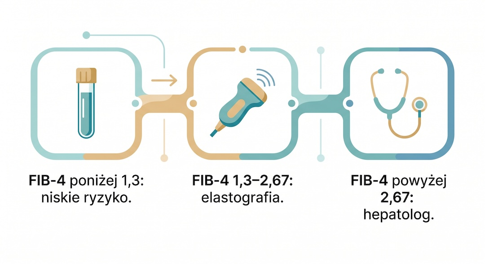
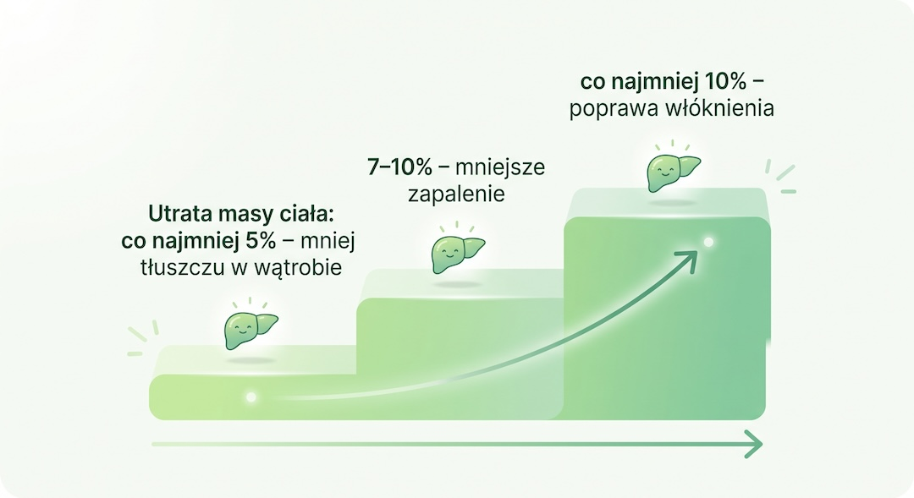

Dostajesz opis USG: „cechy stłuszczenia wątroby”. Alkoholu prawie nie pijesz, a w głowie już masz marskość. Spokojnie, ten wynik jest dziś bardzo częsty, ale nie wolno go też zbagatelizować. Wyjaśniam, co oznacza, jakie badania warto zrobić i co ma poparcie w dowodach.
Szybka odpowiedź
Stłuszczenie wątroby po 50-tce zwykle ma podłoże metaboliczne: insulinooporność, tłuszcz trzewny, u kobiet menopauzę. Samo USG to dopiero początek, bo o rokowaniu decyduje włóknienie, które ocenia się testem FIB-4 i elastografią. Podstawą leczenia jest utrata 5–10% masy ciała, ruch i dieta śródziemnomorska.
Kluczowe wnioski
- Stłuszczenie wątroby bez nadużywania alkoholu to najczęściej MASLD: tłuszcz w wątrobie plus zaburzenia metaboliczne, takie jak nadmiar tłuszczu trzewnego, insulinooporność czy podwyższone ciśnienie.
- USG pokazuje tłuszcz, ale nie mówi, czy jest włóknienie; o rokowaniu decyduje włóknienie, które ocenia się wskaźnikiem FIB-4 i elastografią.
- Po 50-tce rośnie znaczenie menopauzy, tłuszczu trzewnego i cukrzycy typu 2 jako czynników przyspieszających chorobę.
- Tłuszcz i zapalenie w wątrobie można zmniejszyć: spadkiem masy ciała o 5–10% lub więcej, ruchem co najmniej 150 minut tygodniowo i dietą śródziemnomorską.
Czym jest MASLD i czy stłuszczenie wątroby może pojawić się bez alkoholu?
Tak, może. MASLD, czyli stłuszczeniowa choroba wątroby związana z zaburzeniami metabolicznymi, jest dziś najczęstszą przewlekłą chorobą wątroby. To stłuszczenie wątroby połączone z co najmniej jednym czynnikiem ryzyka kardiometabolicznego, przy braku szkodliwego picia alkoholu.
Nowa nazwa nie oznacza nowej choroby. W dużej kohorcie z ośrodka referencyjnego 99,8% osób z rozpoznaniem NAFLD (dawną nazwą „niealkoholowego stłuszczenia wątroby”) spełniało kryteria MASLD, a w populacyjnych danych NHANES III tylko 5,3% osób z NAFLD ich nie spełniało. Dlatego wiedza zebrana przez lata o NAFLD nadal obowiązuje.
Uwaga na pułapkę z tytułu: „bez grama alkoholu” nie jest warunkiem rozpoznania. O MASLD mówimy, gdy ktoś pije nie więcej niż 20 g czystego alkoholu dziennie (kobiety) lub 30 g (mężczyźni). Powyżej tego zaczyna się MetALD (20–50 g u kobiet i 30–60 g u mężczyzn), a przy więcej niż 50 g i 60 g – alkoholowa choroba wątroby. Abstynencja nie wyklucza więc stłuszczenia, ale picie potrafi je pogłębiać, o czym piszę niżej.
Skąd wiadomo, że „metaboliczny” dotyczy właśnie Ciebie? Wystarczy jedno z poniższych kryteriów (progi dla Europejczyków):
- BMI co najmniej 25 kg/m² albo obwód talii co najmniej 94 cm u mężczyzn i 80 cm u kobiet,
- stan przedcukrzycowy (HbA1c 5,7–6,4% lub glukoza na czczo 100–125 mg/dl) albo cukrzyca typu 2,
- triglicerydy co najmniej 150 mg/dl lub leczenie obniżające lipidy,
- HDL do 39 mg/dl u mężczyzn lub do 50 mg/dl u kobiet albo leczenie obniżające lipidy,
- ciśnienie co najmniej 130/85 mmHg lub leczenie nadciśnienia.
To bardzo częsta sytuacja: globalne rozpowszechnienie MASLD wzrosło z 25% w 2016 roku do ponad 30%. Dlaczego tłuszcz ląduje akurat w wątrobie? Gdy tkanka tłuszczowa przestaje prawidłowo magazynować tłuszcz, wolne kwasy tłuszczowe są inaczej rozdzielane w organizmie, a to sprzyja odkładaniu lipidów w wątrobie. Wątroba działa wtedy jak magazyn awaryjny: przyjmuje to, czego nie zmieściły zdrowe zapasy.

Dlaczego USG „straszy” akurat po 50-tce?
Bo po 50-tce kumulują się czynniki ryzyka, a u kobiet dochodzi menopauza, która wiąże się z około 2,4-krotnie wyższymi szansami na MASLD. USG po prostu pokazuje to, co w wątrobie już się odłożyło.
Menopauza to nie wszystko. Kobiety po 50. roku życia mają większe szanse na zaawansowane włóknienie z powodu MASLD nawet po uwzględnieniu innych czynników, a ryzyko ciężkiego włóknienia jest podwyższone także u szczupłych kobiet po menopauzie. Autorzy wytycznych tłumaczą to częściowo wiekiem i zmianą składu ciała. U mężczyzn jest podobnie: po 50. roku życia rośnie ryzyko postępującego włóknienia.
Szczupła sylwetka nie daje gwarancji. U osób z prawidłową masą ciała MASLD też występuje, a częściej towarzyszą mu insulinooporność, większa ilość tłuszczu trzewnego i mniejsza masa mięśniowa. Liczy się więc nie tylko waga, ale też to, gdzie tłuszcz się odkłada: tłuszcz trzewny odpowiada za większość ryzyka kardiometabolicznego związanego z otyłością.
Co dokładnie widzi USG? W metaanalizie 49 badań (4720 uczestników) ultrasonografia wykrywała umiarkowane i nasilone stłuszczenie z czułością 84,8% i swoistością 93,6% w porównaniu z biopsją. To tania, bezpieczna i dostępna metoda, więc nic dziwnego, że ten wynik tak często pojawia się w opisach.
Ale USG robi jedną rzecz: pokazuje tłuszcz. Standardowe badanie nie podaje wyniku w procentach – ilościowo tłuszcz mierzy się parametrem CAP w elastografii albo rezonansem (MRI-PDFF), który jest nieinwazyjnym złotym standardem. Żadna metoda nieinwazyjna nie ocenia za to mikroskopowych cech choroby, takich jak balonowanie komórek wątroby czy zapalenie zrazikowe, a o włóknieniu mówią dopiero test krwi FIB-4 i elastografia.
Dlatego „straszący” opis wymaga spokojnej interpretacji. W populacji ogólnej samo stłuszczenie nie jest niezależnie związane z gorszymi wynikami wątrobowymi; z nimi wiążą się stopień włóknienia i utrzymujące się podwyższone enzymy. Z tego powodu wytyczne nie zalecają przesiewowego USG wątroby u wszystkich, ale każde przypadkowe znalezisko każą wykorzystać do sprawdzenia, czy nie ma zaawansowanego włóknienia.
Czy stłuszczona wątroba jest groźna?
Zwykle nie z dnia na dzień, ale nie jest też obojętna: rokowanie zależy od tego, czy w wątrobie jest sam tłuszcz, czy także zapalenie i włóknienie. Szacuje się, że 10–30% osób z izolowanym stłuszczeniem rozwija zapalenie wątroby i zaawansowaną chorobę, a dojście do marskości trwa zwykle dziesiątki lat.
Najlepiej widać to na liczbach. W szwedzkiej kohorcie 10 568 dorosłych z MASLD potwierdzoną biopsją (porównanych z blisko 50 tys. osób z populacji ogólnej) nadwyżka zgonów z powodu marskości wynosiła 1,2 na 1000 osobolat przy prostym stłuszczeniu, 3,0 przy MASH bez włóknienia, 5,5 przy włóknieniu bez marskości i 22,3 przy marskości. Różnica między samym stłuszczeniem a marskością jest więc ogromna.
Co przyspiesza chorobę? Najmocniej wpływają cukrzyca typu 2 i otyłość, zwłaszcza brzuszna. W badaniu z powtarzaną biopsją u 447 osób skumulowana częstość progresji włóknienia po 12 latach wynosiła 93% u osób z cukrzycą typu 2 i 76% u pozostałych. W badaniach z parami biopsji przyrost masy ciała o ponad 5 kg w trakcie obserwacji wiązał się z postępem włóknienia.
Stłuszczenie to też sygnał dla reszty organizmu. MASLD wiąże się z ponad dwukrotnie wyższym ryzykiem rozpoznania cukrzycy typu 2 i z wyższym ryzykiem niezakończonej zgonem choroby sercowo-naczyniowej (HR 1,40). Dlatego wytyczne zalecają podejście wielospecjalistyczne, tak by leczyć wszystkie składniki naraz.

Jakie badania po USG pokażą, czy wątroba jest naprawdę zagrożona?
Najlepiej zacząć od prostego wyniku z krwi, czyli wskaźnika FIB-4, a jeśli trzeba, dołożyć elastografię wątroby. Taki schemat zalecają europejskie wytyczne osobom z cukrzycą typu 2, z otyłością brzuszną i co najmniej jednym dodatkowym czynnikiem ryzyka albo z trwale podwyższonymi enzymami wątrobowymi – i można go zastosować także wtedy, gdy stłuszczenie wyszło przypadkiem w USG.
FIB-4 liczy się z wieku, AST, ALT i liczby płytek krwi (wiek × AST ÷ [płytki × pierwiastek z ALT]), więc wystarczą wyniki morfologii i prób wątrobowych. Jak go czytać, pokazuje tabela.
| Wynik FIB-4 | Co to oznacza | Co dalej |
|---|---|---|
| poniżej 1,3 | niskie ryzyko zaawansowanego włóknienia | ponowna ocena co 1–3 lata |
| 1,3–2,67 | wynik pośredni, niejednoznaczny | elastografia albo rok intensywnej zmiany stylu życia i ponowny FIB-4 |
| powyżej 2,67 | podwyższone ryzyko zaawansowanego włóknienia | skierowanie do hepatologa |
Dla osób powyżej 65. roku życia wytyczne wskazują niższy próg 2,0 zamiast 1,3. Pamiętaj też, że FIB-4 nie jest nieomylny: przy wyniku poniżej 1,3 pomija około 10% osób z zaawansowanym włóknieniem, a w przedziale pośrednim, u osób starszych i przy cukrzycy typu 2 jego wiarygodność jest ograniczona.
Drugim krokiem jest elastografia, na przykład przejściowa (VCTE), która mierzy sztywność wątroby. Wynik poniżej 8 kPa przyjmuje się jako próg wykluczenia zaawansowanego włóknienia (F3), a powyżej 12 kPa – jako próg jego potwierdzenia.
Nie sugeruj się samymi enzymami. Wytyczne uznają za podwyższone ALT powyżej 33 U/L u mężczyzn i 25 U/L u kobiet, czyli niżej niż dotychczasowe progi, a osoby z MASLD i prawidłowymi aminotransferazami mogą mieć istotne zapalenie wątroby i zaawansowane włóknienie.
Przy rozpoznaniu warto też sprawdzić, co dzieje się poza wątrobą. Wytyczne zalecają ocenę chorób współistniejących – cukrzycy, zaburzeń lipidowych, nadciśnienia, choroby nerek i bezdechu sennego – oraz ryzyka sercowo-naczyniowego.

Czy stłuszczenie wątroby można cofnąć?
U części osób tak, a skala poprawy zależy głównie od tego, ile uda się schudnąć i utrzymać. W prospektywnym badaniu z Kuby 293 osoby z potwierdzonym biopsją zapaleniem wątroby (NASH) przez 52 tygodnie zmieniały styl życia, by zmniejszyć masę ciała: u 25% ustąpiło zapalenie, u 47% obniżył się wskaźnik aktywności choroby (NAS), a u 19% włóknienie się cofnęło.
Autorzy podkreślają zależność od skali odchudzania: im większy spadek masy ciała osiągnięty zmianą stylu życia, tym większa poprawa w badaniu histologicznym. To obserwacja związku, nie dowód przyczynowości, ale zgadza się z zaleceniami wytycznych: u dorosłych z nadwagą celem jest utrzymany spadek masy ciała o co najmniej 5%, by zmniejszyć tłuszcz w wątrobie, o 7–10%, by poprawić stan zapalny, i o co najmniej 10%, by poprawić włóknienie. Przy masie 90 kg to odpowiednio 4,5 kg i 9 kg.
Druga strona medalu: w badaniach dietetycznych największy spadek masy ciała zwykle przypada na około 6 miesięcy, potem część kilogramów wraca. Po 12–24 miesiącach utrzymuje się przeciętnie około 5% ubytku, a tłuszcz i sztywność wątroby częściowo wracają. Dlatego wytyczne podkreślają wartość dostępnych, długoterminowych programów stylu życia z terapią behawioralną, a nie krótkich kuracji.
A co z włóknieniem? Jego cofanie się wiąże się z wygaszeniem zapalenia: ustąpienie zapalenia wątroby było najsilniejszym predyktorem regresji włóknienia, a u osób z zaawansowanym włóknieniem lub marskością regresja wiązała się z mniejszym ryzykiem powikłań wątrobowych. Wytyczne uczciwie dodają jednak, że żadna z tych zmian histologicznych nie ma jeszcze udowodnionego wpływu na śmiertelność.
U osób szczupłych z MASLD wytyczne zalecają dietę i ruch, by zmniejszyć tłuszcz w wątrobie, choć przyznają, że brakuje dowodów na wpływ tych działań na histologię, włóknienie i rokowanie.

Co jeść, a czego unikać, żeby odciążyć wątrobę po 50-tce?
Postaw na dietę śródziemnomorską, a przetworzoną żywność ogranicz do minimum. Według wytycznych dieta śródziemnomorska wydaje się mieć dodatkową wartość dla zmniejszania tłuszczu w wątrobie i zdrowia kardiometabolicznego, a do tego łatwiej utrzymać ją przez lata.
W praktyce: więcej warzyw, owoców (nie soków), roślin strączkowych, orzechów, oliwy z oliwek oraz nieprzetworzonych ryb i drobiu, a mniej wędlin i innego przetworzonego mięsa, produktów ultraprzetworzonych i słodzonych napojów. To nie fanaberia: w badaniach prospektywnych słodzone napoje i czerwone mięso wiązały się z rosnącym wraz z dawką ryzykiem zachorowania na MASLD.
Którą dietę odchudzającą wybrać? Niskowęglowodanowe i niskotłuszczowe diety hipokaloryczne zmniejszają tłuszcz w wątrobie podobnie skutecznie, więc model warto dobrać do swoich preferencji i stanu zdrowia. Dla bardzo niskowęglowodanowej diety ketogenicznej brakuje na razie danych o skuteczności i bezpieczeństwie w MASLD, a jedzenie w oknie czasowym (post przerywany) ma niewiele dowodów przewagi nad zwykłym ograniczeniem kalorii.
A kieliszek wina? Wytyczne zalecają odradzać alkohol wszystkim osobom ze stłuszczeniową chorobą wątroby, a przy zaawansowanym włóknieniu lub marskości – odstawić go całkowicie i na stałe. Nowsze dane nie potwierdzają ochronnego działania lekkich i umiarkowanych ilości, zwłaszcza przy czynnikach ryzyka metabolicznego, a umiarkowane picie wiązano z podwojeniem zachorowań na choroby wątroby. U kobiet ryzyko marskości rośnie już od jednego–dwóch drinków dziennie.
Kawa to dodatek, nie terapia. W badaniach obserwacyjnych regularne picie kawy wiązało się z mniejszym uszkodzeniem wątroby i lepszymi wynikami wątrobowymi. W jednym badaniu przekrojowym co najmniej 3 filiżanki dziennie wiązały się z niższą sztywnością wątroby, ale nie z mniejszym stłuszczeniem mierzonym parametrem CAP.
Jaki ruch najlepiej działa na stłuszczoną wątrobę po 50-tce?
Regularny i dopasowany do Twoich możliwości: wytyczne zalecają co najmniej 150 minut tygodniowo aktywności o umiarkowanej intensywności albo 75 minut intensywnej, a najlepiej łączyć trening aerobowy z oporowym. Jeśli masz choroby serca lub stawów albo długo się nie ruszałeś, plan ustal z lekarzem.
Ruch pomaga wątrobie nawet wtedy, gdy waga się nie zmienia. W badaniu randomizowanym 3 miesiące treningu aerobowego (trzy sesje po 90 minut tygodniowo) zmniejszyły stłuszczenie i sztywność wątroby niezależnie od utraty masy ciała, a wytyczne wskazują, że większa aktywność i krótszy czas siedzenia dają korzyści wątrobowe i kardiometaboliczne niezależnie od odchudzania.
Nie musisz katować się interwałami. Metaanaliza 19 badań randomizowanych wykazała, że trening interwałowy o wysokiej intensywności i klasyczny trening ciągły o umiarkowanej intensywności zmniejszają tłuszcz w wątrobie równie skutecznie, a nie wskazano jednego optymalnego schematu ćwiczeń. Wygra to, co będziesz robić regularnie.
Dla osoby po 50-tce realny punkt wyjścia to 30–60 minut spaceru, marszu z kijkami lub jazdy na rowerze w większość dni tygodnia. Taka aktywność prowadzi do niewielkiej utraty masy i tłuszczu, poprawia parametry kardiometaboliczne i pomaga zachować masę mięśniową podczas odchudzania, a uzupełnieniem powinny być ćwiczenia siłowe.
Czy suplementy, „detoksy” i leki mają sens przy stłuszczonej wątrobie?
Suplementy – nie, bo nie mają potwierdzonej skuteczności: według wytycznych EASL–EASD–EASO nutraceutyków nie można zalecać, ponieważ brakuje dowodów ich skuteczności i bezpieczeństwa u osób z MASLD. Leki – tak, ale dla wybranej grupy.
Sylimaryna (wyciąg z ostropestu) w kilku małych badaniach mogła poprawić enzymy wątrobowe, ale nie wykazano poprawy w histologii. Witaminy E wytyczne europejskie nie zalecają jako terapii celowanej w MASH, także z powodu potencjalnych ryzyk długoterminowych.
Hasła o „oczyszczaniu” i „detoksie” wątroby traktuj z dystansem: niektóre preparaty reklamowane jako wspierające wątrobę mogą jej zaszkodzić, a ostropest jest zwykle bezpieczny, ale nie udowodniono, że poprawia zdrowie wątroby. Przed sięgnięciem po jakikolwiek preparat zapytaj lekarza lub farmaceutę.
Leki dla wybranych osób istnieją. Rezdiffra (resmetirom) ma w Unii Europejskiej warunkowe pozwolenie na dopuszczenie do obrotu, jest wydawana wyłącznie na receptę i stosowana razem z dietą oraz aktywnością fizyczną. Wytyczne europejskie każą rozważyć ją u dorosłych z niecyrotycznym MASH i istotnym włóknieniem (stadium co najmniej F2), jeśli lek jest zarejestrowany w danym kraju.
Co pokazało badanie III fazy MAESTRO-NASH z udziałem 966 osób? Po roku ustąpienie MASH bez pogorszenia włóknienia osiągnęło 29,9% osób przyjmujących 100 mg leku i 9,7% w grupie placebo, a poprawę włóknienia o co najmniej jeden stopień – 25,9% wobec 14,2%. To realna korzyść dla części pacjentów, ale nie dla wszystkich, i nie zastępuje zmiany stylu życia.
Jeśli masz cukrzycę typu 2 lub otyłość, lekarz może rozważyć leki inkretynowe, na przykład semaglutyd lub tirzepatyd: wytyczne wskazują je w leczeniu tych chorób, gdy są wskazane, a leki przeciwcukrzycowe i przeciw otyłości z tej grupy mogą też korzystnie wpływać na wątrobę (dane z badań II fazy). Dostępność i refundacja w Polsce zmieniają się, więc to pytanie do hepatologa lub diabetologa.
Od czego zacząć po opisie USG ze stłuszczeniem wątroby?
Od rozmowy z lekarzem o ocenie włóknienia, a nie od radykalnej diety: poproś o oznaczenie FIB-4 i zdecydujcie razem, czy potrzebna jest elastografia. Potem możesz wdrożyć poniższe kroki.
- Zbierz wyniki: opis USG, AST, ALT, morfologię z płytkami, glukozę lub HbA1c, lipidogram, ciśnienie i obwód talii.
- Policz z lekarzem FIB-4 i ustal, czy potrzebna jest elastografia lub wizyta u hepatologa.
- Opowiedz uczciwie, ile i jak pijesz – wytyczne zalecają udokumentować ilość, wzorzec i historię picia u każdej osoby ze stłuszczeniem wątroby.
- Wyznacz cel na rok: spadek masy ciała o 5–10%, co najmniej 150 minut ruchu tygodniowo i więcej jedzenia w stylu śródziemnomorskim.
- Przy wyniku FIB-4 w przedziale pośrednim jedną z opcji jest rok zmiany stylu życia i ponowne badanie FIB-4.
Ten tekst ma charakter edukacyjny i nie zastępuje konsultacji lekarskiej ani diagnozy.
Najczęściej zadawane pytania
Czy stłuszczenie wątroby można cofnąć?
U części osób tak, zwłaszcza zanim rozwinie się zaawansowane włóknienie. Przy nadwadze lub otyłości utrzymana redukcja masy ciała o co najmniej 5% zmniejsza ilość tłuszczu w wątrobie, 7–10% może poprawić stan zapalny, a większy spadek zwiększa szansę poprawy włóknienia. Cel i tempo odchudzania warto ustalić z lekarzem.
Czy stłuszczenie wątroby w USG oznacza marskość?
Nie. Zwykłe USG może wykazać tłuszcz w wątrobie, ale nie określa wiarygodnie stopnia włóknienia i nie rozpoznaje marskości na podstawie samego opisu stłuszczenia. Ryzyko zaawansowanego włóknienia ocenia się najpierw wskaźnikiem FIB-4, a w razie wyniku pośredniego lub wysokiego także elastografią i konsultacją lekarską.
Jakie badania zrobić po wykryciu stłuszczenia wątroby w USG?
Z lekarzem omów morfologię z liczbą płytek, AST i ALT potrzebne do obliczenia FIB-4 oraz ocenę glukozy, lipidów, ciśnienia i innych przyczyn choroby wątroby. Jeśli FIB-4 nie wyklucza zaawansowanego włóknienia, kolejnym krokiem jest zwykle elastografia. Prawidłowe aminotransferazy same nie wykluczają istotnej choroby.
Czy suplementy na wątrobę pomagają przy MASLD?
Nie ma suplementu, który byłby potwierdzonym zamiennikiem redukcji masy ciała, ruchu, diety i leczenia chorób metabolicznych. Europejskie wytyczne nie zalecają nutraceutyków jako terapii MASLD z powodu niewystarczających danych o skuteczności i bezpieczeństwie. Niektóre preparaty mogą szkodzić wątrobie lub wchodzić w interakcje z lekami, dlatego stosowanie trzeba omówić z lekarzem lub farmaceutą.
Źródła
- EASL–EASD–EASO Clinical Practice Guidelines on the management of metabolic dysfunction-associated steatotic liver disease (MASLD), Journal of Hepatology 2024
- Hernaez R. i wsp. Diagnostic accuracy and reliability of ultrasonography for the detection of fatty liver: a meta-analysis, Hepatology 2011
- Vilar-Gomez E. i wsp. Weight loss through lifestyle modification significantly reduces features of nonalcoholic steatohepatitis, Gastroenterology 2015
- Harrison S.A. i wsp. A phase 3, randomized, controlled trial of resmetirom in NASH with liver fibrosis (MAESTRO-NASH), New England Journal of Medicine 2024
- Europejska Agencja Leków (EMA): strona produktu Rezdiffra (resmetirom), warunkowe pozwolenie na dopuszczenie do obrotu
- Mayo Clinic: Vitamins and supplements for fatty liver disease (MASLD), materiał informacyjny dla pacjentów
Uwaga: Artykuł ma charakter informacyjny i edukacyjny. Nie zastępuje konsultacji lekarskiej, diagnozy ani leczenia.